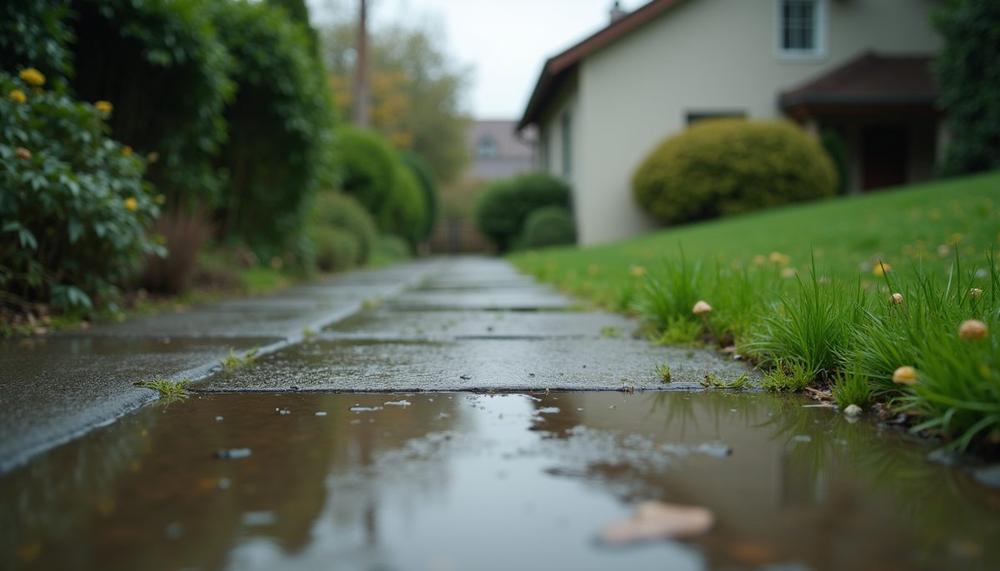
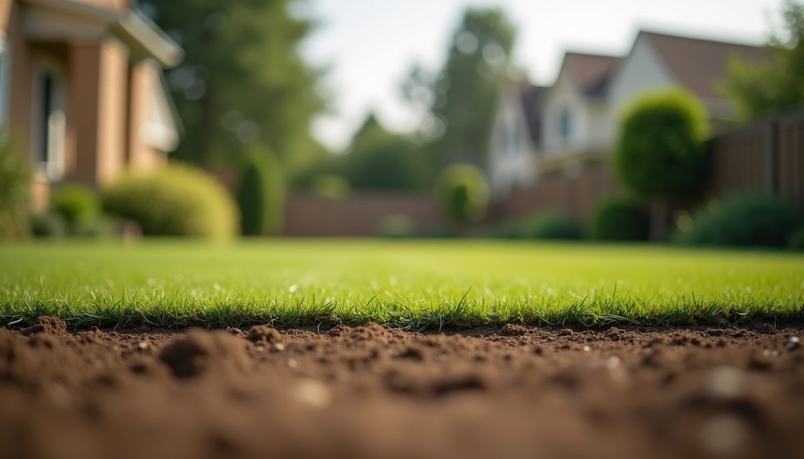
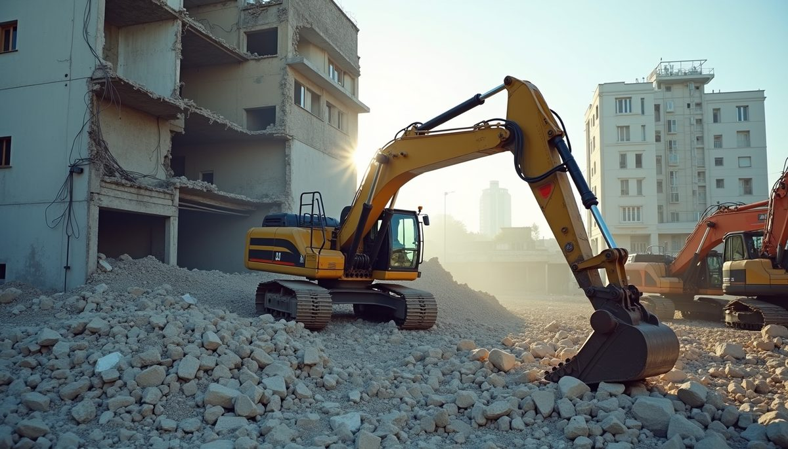
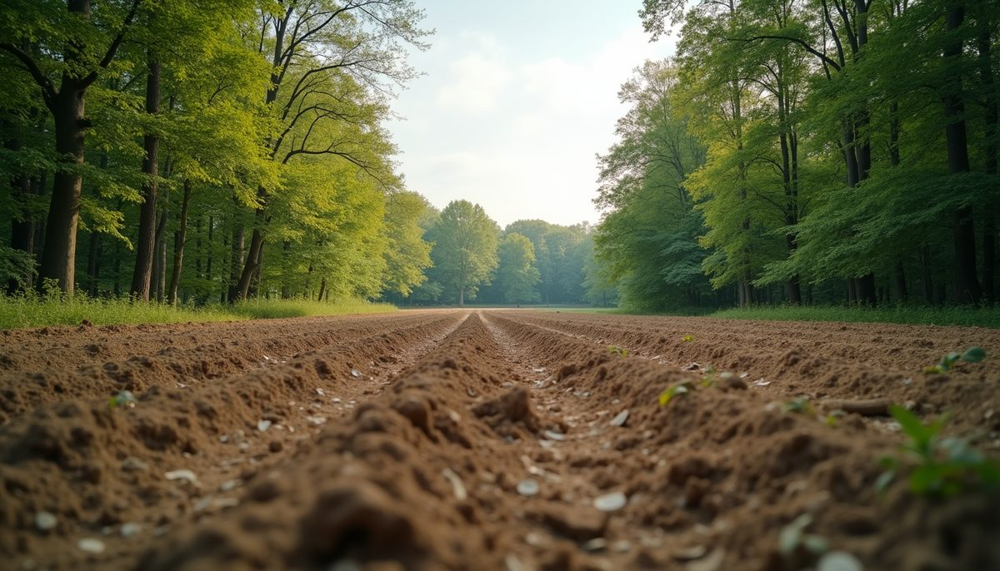
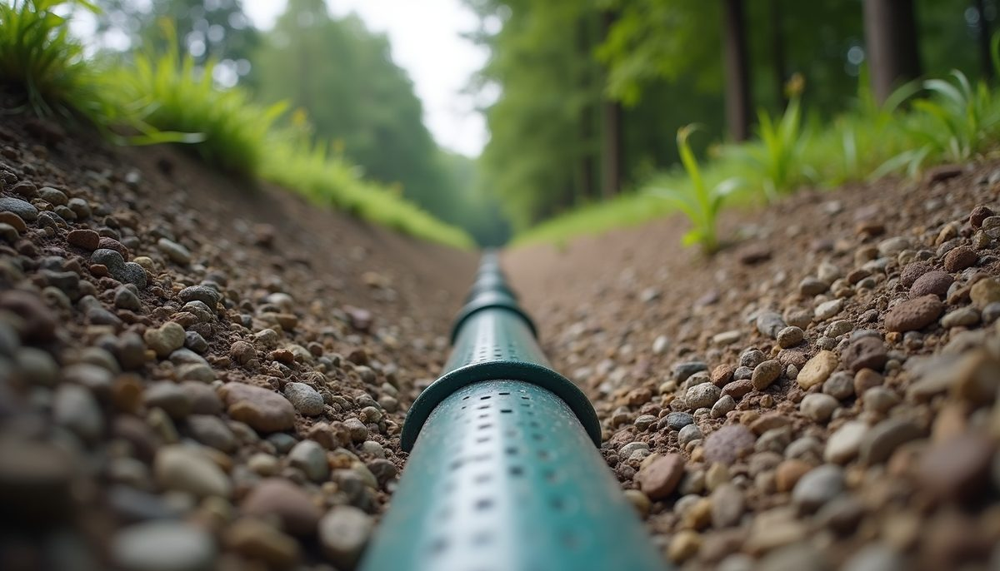

the field log —
Blog.
Notes from the ground — every entry below is reproduced from Environmental Construction Services' own blog.
7 Common Drainage Problems Causing Water Accumulation in South Georgia Yards
Water pooling in your yard after rain can be frustrating and damaging. In South Georgia, where heavy rains and clay soils are common, drainage issues often lead to standing water that harms lawns, plants, and …
Read the entry →
Understanding Why Your Yard Stays Wet: Surface Water and Groundwater Issues Explained
A wet yard can be more than just an inconvenience. It can damage your landscaping, create unsafe conditions, and even harm your home’s foundation. If you notice standing water in your yard after rain or …
Read the entry →
Expert Site Grading Benefits: Why Hiring Professionals Matters
When preparing land for construction or landscaping, proper site grading is essential. It shapes the land to ensure water flows away from buildings, prevents erosion, and creates a stable foundation. We …
Read the entry →
The Importance of Demolition in Urban Renewal and Site Preparation
Demolition plays a crucial role in shaping the future of our cities and communities. Removing old, unsafe, or unsightly buildings clears the way for new construction, revitalizes neighborhoods, and ensures …
Read the entry →The Essential Role of Quality Drainage and Land Management in Effective Property Maintenance
Proper property maintenance goes beyond simple upkeep. It requires a strategic approach to managing water flow, vegetation, and land features to protect the land and enhance its value. Quality drainage and …
Read the entry →
Transform Your Land into an Oasis with Eco-Friendly Clearing and Management Solutions
Clearing and managing land can feel overwhelming when nature has taken over with thick brush, unwanted trees, and uneven terrain. Whether you want to build your dream home, create the perfect hunting ground …
Read the entry →
Essential Drainage Solutions: The Essentials of Drainage System Installation
Proper drainage is vital for maintaining the health and safety of any property. Water that pools or flows improperly can cause damage to foundations, landscaping, and even indoor spaces. We want to share …
Read the entry →Transforming Your Residential Lot into a Valuable Usable Space in Moultrie
Turning a residential lot into a practical, attractive space can significantly increase its value and enhance your daily living experience. If you own property in Moultrie or nearby communities, making …
Read the entry →